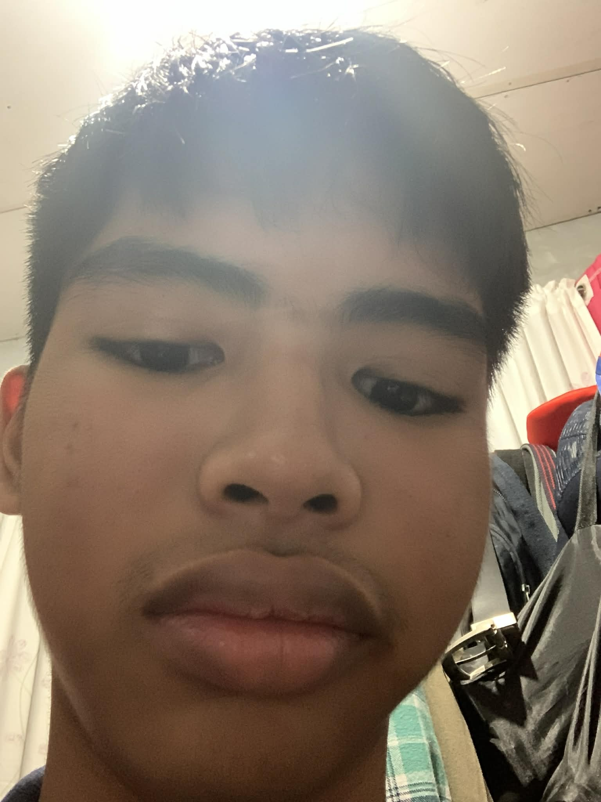

Name: Liuz Anthony L. Cabalhug
Age: 15
Birthday: August 7, 2010
Gender: Male
School: Saint Paul's School of Ormoc Foundation, Inc.
Grade Level: Grade 10
Section: Innovation
Hello, my name is Liuz Anthony Cabalhug. I am 15 years old and I live in Simangan. I am very good at subjects related to English, but I struggle with Filipino subjects. Even though I am not strong in every area, I still try my best to improve. I love playing games and listening to music during my free time. I rarely hang out, but if I get the opportunity, I would definitely go. If you meet me, you will notice that I am either very energetic and focused or very tired and sleepy, depending on my mood. I am a simple person who wants to improve my skills and continue learning new things.
Listening to music
Studying(if im tired playing)
Watching videos
Playing games
Mathematics and Science
My goal is to learn enough skills and knowledge to be able to get a stable job in the future. I want to make sure that I can support myself and have a secure life, while also having the time and freedom to enjoy the things I love, like playing games and listening to music. I hope to balance work and personal life, so I can grow as a responsible and capable person without losing the fun and happiness that make life enjoyable. Over time, I want to continue improving myself, learning new things, and building a future where I feel confident and prepared for any challenges that come my way.